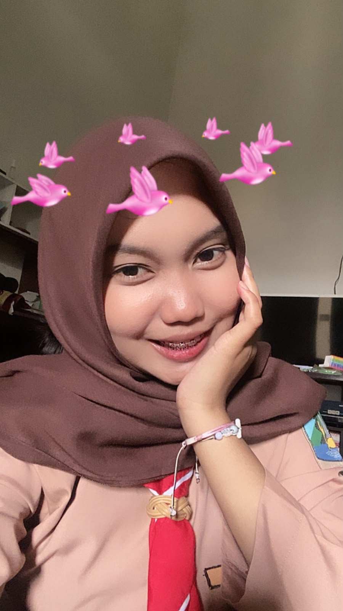

Praktikum Coding Web
Pembuatan tata letak responsif menggunakan HTML5 & CSS3.
Selamat datang di Portofolio Digital Kelas XII. Halaman ini berfungsi sebagai etalase showcase karya, simulasi laboratorium, serta jurnal modul pembelajaran Rekayasa Perangkat Lunak dan Informatika sepanjang tahun ajaran.
